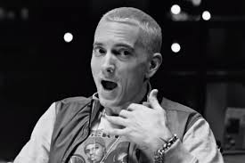

Age: 43
Top Songs: Rap God, Lose Yourself, Not Afraid, When I'm Gone, Love the Way You Lie
Net Worth: $210 million
 The fifth best rapper in the game at the moment goes by the name of Marshall Mathers, or better known as Eminem. His rhyming could be one of the best we've ever seen, just behind the four rappers ahead of him. He has overcame a lot of struggle to get to the number five spot, and he is very agressive in attacking the beat. This may be because of his struggle he is portraying, but it is a little too much,and that is why he is not farther up on the list.